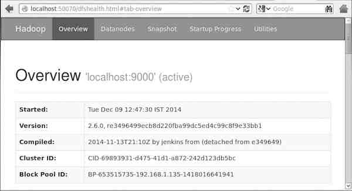

Hadoop - Enviornment Setup
Hadoop is supported by GNU/Linux platform and its flavors. Therefore, we have to install a Linux operating system for setting up Hadoop environment. In case you have an OS other than Linux, you can install a Virtualbox software in it and have Linux inside the Virtualbox.
Pre-installation Setup
Before installing Hadoop into the Linux environment, we need to set up Linux using ssh (Secure Shell). Follow the steps given below for setting up the Linux environment.
Creating a User
At the beginning, it is recommended to create a separate user for Hadoop to isolate Hadoop file system from Unix file system. Follow the steps given below to create a user:
- Open the root using the command “su”.
- Create a user from the root account using the command “useradd username”.
- Now you can open an existing user account using the command “su username”.
Open the Linux terminal and type the following commands to create a user.
$ su password: # useradd hadoop # passwd hadoop New passwd: Retype new passwd
SSH Setup and Key Generation
SSH setup is required to do different operations on a cluster such as starting, stopping, distributed daemon shell operations. To authenticate different users of Hadoop, it is required to provide public/private key pair for a Hadoop user and share it with different users.
The following commands are used for generating a key value pair using SSH. Copy the public keys form id_rsa.pub to authorized_keys, and provide the owner with read and write permissions to authorized_keys file respectively.
$ ssh-keygen -t rsa $ cat ~/.ssh/id_rsa.pub >> ~/.ssh/authorized_keys $ chmod 0600 ~/.ssh/authorized_keys
Installing Java
Java is the main prerequisite for Hadoop. First of all, you should verify the existence of java in your system using the command “java -version”. The syntax of java version command is given below.
$ java -version
If everything is in order, it will give you the following output.
java version "1.7.0_71" Java(TM) SE Runtime Environment (build 1.7.0_71-b13) Java HotSpot(TM) Client VM (build 25.0-b02, mixed mode)
If java is not installed in your system, then follow the steps given below for installing java.
Step 1
Download java (JDK <latest version> - X64.tar.gz) by visiting the following link http://www.oracle.com/technetwork/java/javase/downloads/jdk7-downloads1880260.html.
Then jdk-7u71-linux-x64.tar.gz will be downloaded into your system.
Step 2
Generally you will find the downloaded java file in Downloads folder. Verify it and extract the jdk-7u71-linux-x64.gz file using the following commands.
$ cd Downloads/ $ ls jdk-7u71-linux-x64.gz $ tar zxf jdk-7u71-linux-x64.gz $ ls jdk1.7.0_71 jdk-7u71-linux-x64.gz
Step 3
To make java available to all the users, you have to move it to the location “/usr/local/”. Open root, and type the following commands.
$ su password: # mv jdk1.7.0_71 /usr/local/ # exit
Step 4
For setting up PATH and JAVA_HOME variables, add the following commands to ~/.bashrc file.
export JAVA_HOME=/usr/local/jdk1.7.0_71 export PATH=$PATH:$JAVA_HOME/bin
Now apply all the changes into the current running system.
$ source ~/.bashrc
Step 5
Use the following commands to configure java alternatives:
# alternatives --install /usr/bin/java java usr/local/java/bin/java 2 # alternatives --install /usr/bin/javac javac usr/local/java/bin/javac 2 # alternatives --install /usr/bin/jar jar usr/local/java/bin/jar 2 # alternatives --set java usr/local/java/bin/java # alternatives --set javac usr/local/java/bin/javac # alternatives --set jar usr/local/java/bin/jar
Now verify the java -version command from the terminal as explained above.
Downloading Hadoop
Download and extract Hadoop 2.4.1 from Apache software foundation using the following commands.
$ su password: # cd /usr/local # wget http://apache.claz.org/hadoop/common/hadoop-2.4.1/ hadoop-2.4.1.tar.gz # tar xzf hadoop-2.4.1.tar.gz # mv hadoop-2.4.1/* to hadoop/ # exit
Hadoop Operation Modes
Once you have downloaded Hadoop, you can operate your Hadoop cluster in one of the three supported modes:
Local/Standalone Mode : After downloading Hadoop in your system, by default, it is configured in a standalone mode and can be run as a single java process.
Pseudo Distributed Mode : It is a distributed simulation on single machine. Each Hadoop daemon such as hdfs, yarn, MapReduce etc., will run as a separate java process. This mode is useful for development.
Fully Distributed Mode : This mode is fully distributed with minimum two or more machines as a cluster. We will come across this mode in detail in the coming chapters.
Installing Hadoop in Standalone Mode
Here we will discuss the installation of Hadoop 2.4.1 in standalone mode.
There are no daemons running and everything runs in a single JVM. Standalone mode is suitable for running MapReduce programs during development, since it is easy to test and debug them.
Setting Up Hadoop
You can set Hadoop environment variables by appending the following commands to ~/.bashrc file.
export HADOOP_HOME=/usr/local/hadoop
Before proceeding further, you need to make sure that Hadoop is working fine. Just issue the following command:
$ hadoop version
If everything is fine with your setup, then you should see the following result:
Hadoop 2.4.1 Subversion https://svn.apache.org/repos/asf/hadoop/common -r 1529768 Compiled by hortonmu on 2013-10-07T06:28Z Compiled with protoc 2.5.0 From source with checksum 79e53ce7994d1628b240f09af91e1af4
It means your Hadoop's standalone mode setup is working fine. By default, Hadoop is configured to run in a non-distributed mode on a single machine.
Example
Let's check a simple example of Hadoop. Hadoop installation delivers the following example MapReduce jar file, which provides basic functionality of MapReduce and can be used for calculating, like Pi value, word counts in a given list of files, etc.
$HADOOP_HOME/share/hadoop/mapreduce/hadoop-mapreduce-examples-2.2.0.jar
Let's have an input directory where we will push a few files and our requirement is to count the total number of words in those files. To calculate the total number of words, we do not need to write our MapReduce, provided the .jar file contains the implementation for word count. You can try other examples using the same .jar file; just issue the following commands to check supported MapReduce functional programs by hadoop-mapreduce-examples-2.2.0.jar file.
$ hadoop jar $HADOOP_HOME/share/hadoop/mapreduce/hadoop-mapreduceexamples-2.2.0.jar
Step 1
Create temporary content files in the input directory. You can create this input directory anywhere you would like to work.
$ mkdir input $ cp $HADOOP_HOME/*.txt input $ ls -l input
It will give the following files in your input directory:
total 24 -rw-r--r-- 1 root root 15164 Feb 21 10:14 LICENSE.txt -rw-r--r-- 1 root root 101 Feb 21 10:14 NOTICE.txt -rw-r--r-- 1 root root 1366 Feb 21 10:14 README.txt
These files have been copied from the Hadoop installation home directory. For your experiment, you can have different and large sets of files.
Step 2
Let's start the Hadoop process to count the total number of words in all the files available in the input directory, as follows:
$ hadoop jar $HADOOP_HOME/share/hadoop/mapreduce/hadoop-mapreduceexamples-2.2.0.jar wordcount input ouput
Step 3
Step-2 will do the required processing and save the output in output/part-r00000 file, which you can check by using:
$cat output/*
It will list down all the words along with their total counts available in all the files available in the input directory.
"AS 4 "Contribution" 1 "Contributor" 1 "Derivative 1 "Legal 1 "License" 1 "License"); 1 "Licensor" 1 "NOTICE” 1 "Not 1 "Object" 1 "Source” 1 "Work” 1 "You" 1 "Your") 1 "[]" 1 "control" 1 "printed 1 "submitted" 1 (50%) 1 (BIS), 1 (C) 1 (Don't) 1 (ECCN) 1 (INCLUDING 2 (INCLUDING, 2 .............
Installing Hadoop in Pseudo Distributed Mode
Follow the steps given below to install Hadoop 2.4.1 in pseudo distributed mode.
Step 1: Setting Up Hadoop
You can set Hadoop environment variables by appending the following commands to ~/.bashrc file.
export HADOOP_HOME=/usr/local/hadoop export HADOOP_MAPRED_HOME=$HADOOP_HOME export HADOOP_COMMON_HOME=$HADOOP_HOME export HADOOP_HDFS_HOME=$HADOOP_HOME export YARN_HOME=$HADOOP_HOME export HADOOP_COMMON_LIB_NATIVE_DIR=$HADOOP_HOME/lib/native export PATH=$PATH:$HADOOP_HOME/sbin:$HADOOP_HOME/bin export HADOOP_INSTALL=$HADOOP_HOME
Now apply all the changes into the current running system.
$ source ~/.bashrc
Step 2: Hadoop Configuration
You can find all the Hadoop configuration files in the location “$HADOOP_HOME/etc/hadoop”. It is required to make changes in those configuration files according to your Hadoop infrastructure.
$ cd $HADOOP_HOME/etc/hadoop
In order to develop Hadoop programs in java, you have to reset the java environment variables in hadoop-env.sh file by replacing JAVA_HOME value with the location of java in your system.
export JAVA_HOME=/usr/local/jdk1.7.0_71
The following are the list of files that you have to edit to configure Hadoop.
core-site.xml
The core-site.xml file contains information such as the port number used for Hadoop instance, memory allocated for the file system, memory limit for storing the data, and size of Read/Write buffers.
Open the core-site.xml and add the following properties in between <configuration>, </configuration> tags.
<configuration>
<property>
<name>fs.default.name </name>
<value> hdfs://localhost:9000 </value>
</property>
</configuration>
hdfs-site.xml
The hdfs-site.xml file contains information such as the value of replication data, namenode path, and datanode paths of your local file systems. It means the place where you want to store the Hadoop infrastructure.
Let us assume the following data.
dfs.replication (data replication value) = 1 (In the below given path /hadoop/ is the user name. hadoopinfra/hdfs/namenode is the directory created by hdfs file system.) namenode path = //home/hadoop/hadoopinfra/hdfs/namenode (hadoopinfra/hdfs/datanode is the directory created by hdfs file system.) datanode path = //home/hadoop/hadoopinfra/hdfs/datanode
Open this file and add the following properties in between the <configuration> </configuration> tags in this file.
<configuration>
<property>
<name>dfs.replication</name>
<value>1</value>
</property>
<property>
<name>dfs.name.dir</name>
<value>file:///home/hadoop/hadoopinfra/hdfs/namenode </value>
</property>
<property>
<name>dfs.data.dir</name>
<value>file:///home/hadoop/hadoopinfra/hdfs/datanode </value>
</property>
</configuration>
Note: In the above file, all the property values are user-defined and you can make changes according to your Hadoop infrastructure.
yarn-site.xml
This file is used to configure yarn into Hadoop. Open the yarn-site.xml file and add the following properties in between the <configuration>, </configuration> tags in this file.
<configuration>
<property>
<name>yarn.nodemanager.aux-services</name>
<value>mapreduce_shuffle</value>
</property>
</configuration>
mapred-site.xml
This file is used to specify which MapReduce framework we are using. By default, Hadoop contains a template of yarn-site.xml. First of all, it is required to copy the file from mapred-site,xml.template to mapred-site.xml file using the following command.
$ cp mapred-site.xml.template mapred-site.xml
Open mapred-site.xml file and add the following properties in between the <configuration>, </configuration>tags in this file.
<configuration>
<property>
<name>mapreduce.framework.name</name>
<value>yarn</value>
</property>
</configuration>
Verifying Hadoop Installation
The following steps are used to verify the Hadoop installation.
Step 1: Name Node Setup
Set up the namenode using the command “hdfs namenode -format” as follows.
$ cd ~ $ hdfs namenode -format
The expected result is as follows.
10/24/14 21:30:55 INFO namenode.NameNode: STARTUP_MSG: /************************************************************ STARTUP_MSG: Starting NameNode STARTUP_MSG: host = localhost/192.168.1.11 STARTUP_MSG: args = [-format] STARTUP_MSG: version = 2.4.1 ... ... 10/24/14 21:30:56 INFO common.Storage: Storage directory /home/hadoop/hadoopinfra/hdfs/namenode has been successfully formatted. 10/24/14 21:30:56 INFO namenode.NNStorageRetentionManager: Going to retain 1 images with txid >= 0 10/24/14 21:30:56 INFO util.ExitUtil: Exiting with status 0 10/24/14 21:30:56 INFO namenode.NameNode: SHUTDOWN_MSG: /************************************************************ SHUTDOWN_MSG: Shutting down NameNode at localhost/192.168.1.11 ************************************************************/
Step 2: Verifying Hadoop dfs
The following command is used to start dfs. Executing this command will start your Hadoop file system.
$ start-dfs.sh
The expected output is as follows:
10/24/14 21:37:56 Starting namenodes on [localhost] localhost: starting namenode, logging to /home/hadoop/hadoop 2.4.1/logs/hadoop-hadoop-namenode-localhost.out localhost: starting datanode, logging to /home/hadoop/hadoop 2.4.1/logs/hadoop-hadoop-datanode-localhost.out Starting secondary namenodes [0.0.0.0]
Step 3: Verifying Yarn Script
The following command is used to start the yarn script. Executing this command will start your yarn daemons.
$ start-yarn.sh
The expected output as follows:
starting yarn daemons starting resourcemanager, logging to /home/hadoop/hadoop 2.4.1/logs/yarn-hadoop-resourcemanager-localhost.out localhost: starting nodemanager, logging to /home/hadoop/hadoop 2.4.1/logs/yarn-hadoop-nodemanager-localhost.out
Step 4: Accessing Hadoop on Browser
The default port number to access Hadoop is 50070. Use the following url to get Hadoop services on browser.
http://localhost:50070/
Step 5: Verify All Applications for Cluster
The default port number to access all applications of cluster is 8088. Use the following url to visit this service.
http://localhost:8088/